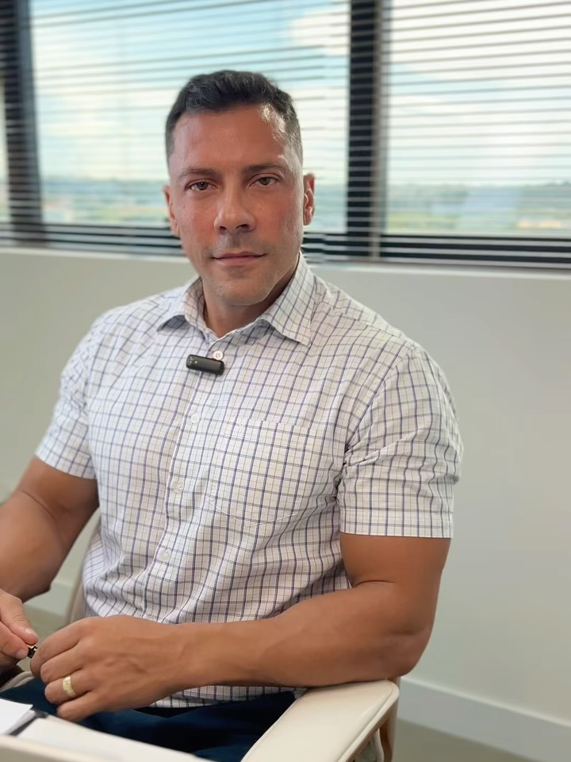
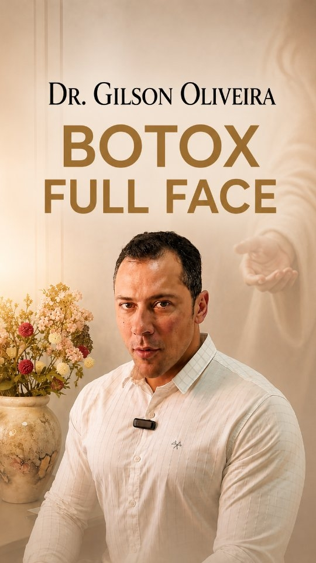

Harmonização
Full Face
Um olhar para as proporções e para a relação entre os traços. O plano é construído a partir das suas características e dos seus objetivos.
Conversar sobre Full Face ↗PRESIDENTE PRUDENTE · SP
Volte a gostar do que vê no espelho. Com leveza. Com naturalidade.
Lábios, perfil ou expressão: descubra o que faz sentido para você em uma avaliação individual com o Dr. Gilson Oliveira.
Quero minha avaliação ↗Fale com a equipe e consulte os horários disponíveis.

Naturalidade nos traços.
Sofisticação no cuidado.
Segurança na decisão.
COMECE PELO QUE VOCÊ BUSCA
Você não precisa escolher um procedimento agora. Conte à equipe o que gostaria de valorizar.
Sobre o que você quer conversar?
Vamos conversar sobre a harmonia do seu rosto.
Conversar com a equipe ↗O planejamento é definido na avaliação presencial.Harmonizar começa por entender você.
A forma como você sorri, seus contornos e suas expressões fazem parte da sua identidade. O planejamento facial considera esse conjunto, em vez de tratar cada detalhe de forma isolada.
O Dr. Gilson Oliveira apresenta uma abordagem voltada à naturalidade, à sofisticação e à segurança. A consulta é o momento para alinhar expectativas, avaliar indicações e esclarecer os cuidados de cada procedimento.
PROCEDIMENTOS
Conheça os procedimentos e dê o primeiro passo
para um plano que respeita os seus traços.
Um olhar para as proporções e para a relação entre os traços. O plano é construído a partir das suas características e dos seus objetivos.
Conversar sobre Full Face ↗Formato, contorno e proporção dos lábios em harmonia com os demais traços do rosto.
Saiba mais ↗Avaliação do perfil e dos contornos do nariz, com discussão das possibilidades, limitações e riscos.
Saiba mais ↗Planejamento que considera os movimentos e as particularidades da sua expressão facial.
Saiba mais ↗A indicação depende de avaliação individual. Resultados, duração e cuidados variam para cada pessoa.

INFORMAÇÃO TAMBÉM É CUIDADO
Antes de escolher um procedimento, entenda a proposta. No perfil oficial, o Dr. Gilson explica sua abordagem e responde às dúvidas que recebe no consultório.
DOUTOR RESPONDEDúvidas sobre toxina botulínica▶PLANEJAMENTO INDIVIDUALNaturalidade na expressão facial▶Ver mais no Instagram ↗O CONSULTÓRIO
No Edifício Cosmopolitan, um endereço para conversar sobre suas expectativas e planejar os próximos passos com clareza.
Abrir localização ↗Sala 603 · Jardim Paulista
Presidente Prudente — SP
CEP 19023-450
PERGUNTAS FREQUENTES
Espaço para perguntar.
Tempo para decidir.
Não. Você pode começar contando o que gostaria de melhorar e o que deseja preservar. A avaliação ajuda a entender as possibilidades e a construir um planejamento individual.
A abordagem apresentada pelo Dr. Gilson valoriza a naturalidade e a harmonia entre os traços. Suas expectativas e os limites do tratamento são discutidos na consulta.
Não existe uma duração única para todos. O procedimento, as características individuais e outros fatores influenciam esse tempo. Converse sobre isso durante a avaliação.
Entre em contato com a equipe pelo WhatsApp (18) 99690-8229 para consultar horários e orientações para a avaliação no Edifício Cosmopolitan, sala 603.
VAMOS CONVERSAR?
Converse com a equipe. Tire suas dúvidas. Agende seu momento.
Agendar minha avaliação ↗